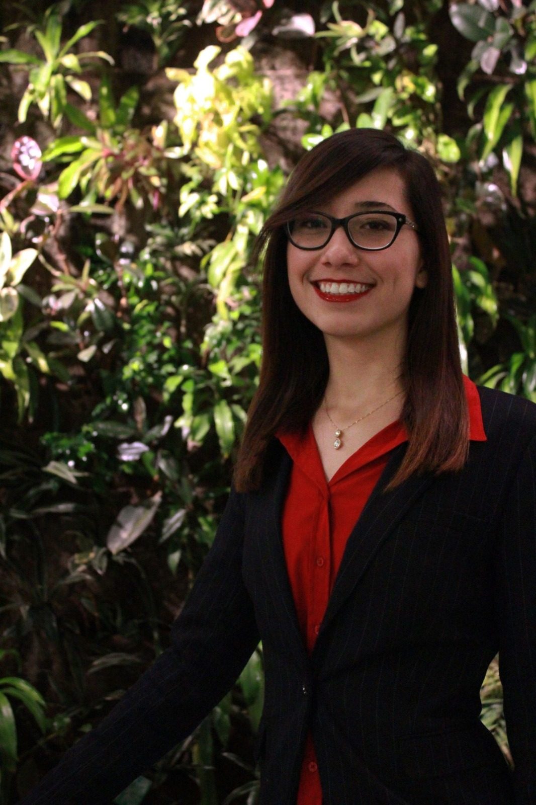
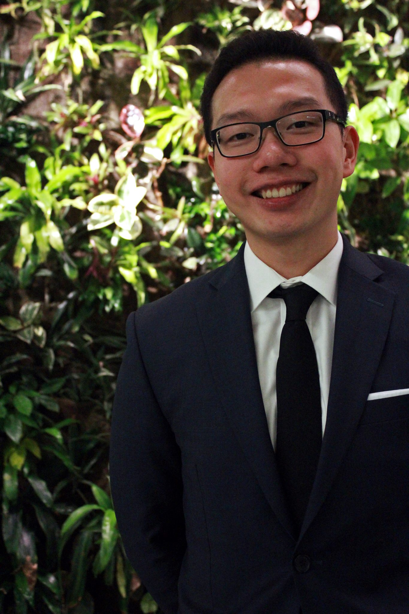
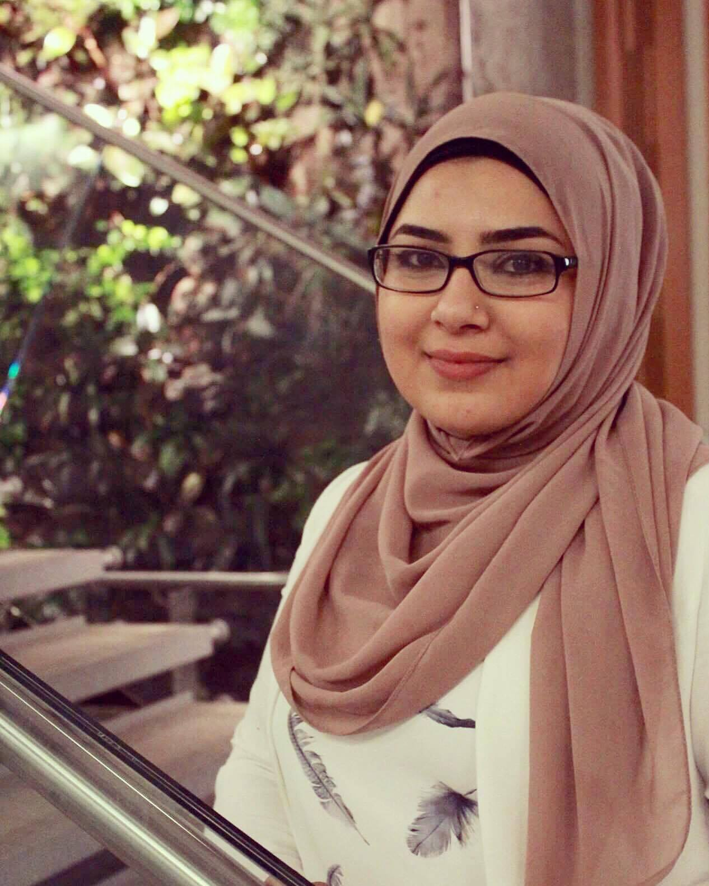
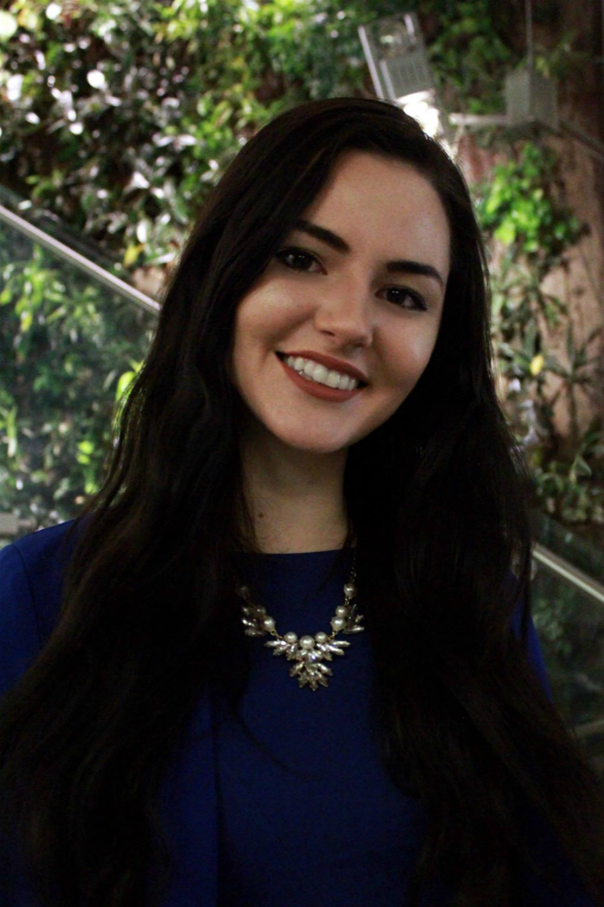
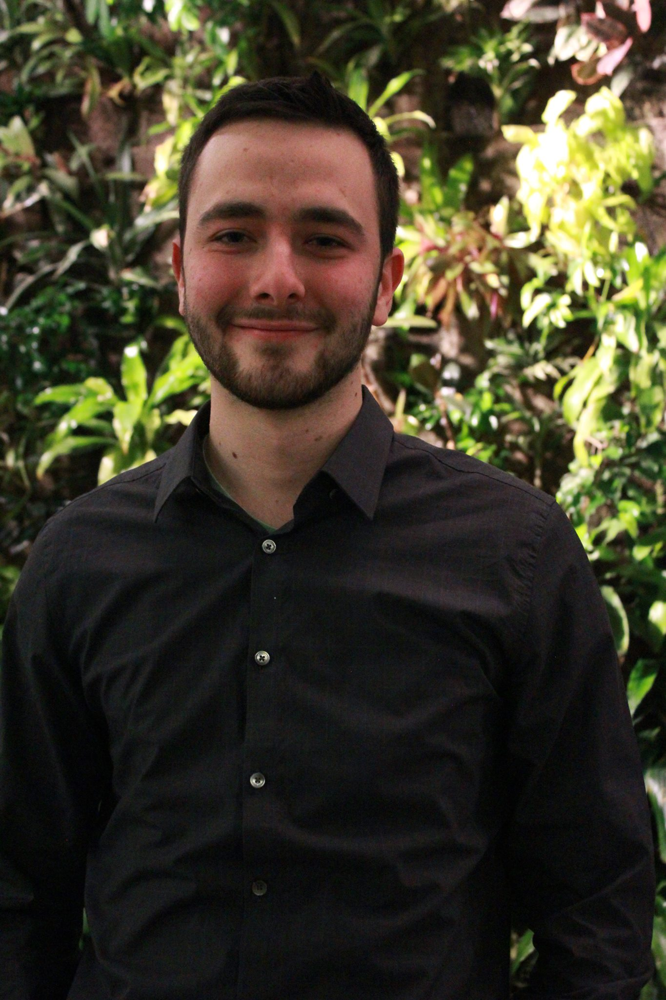
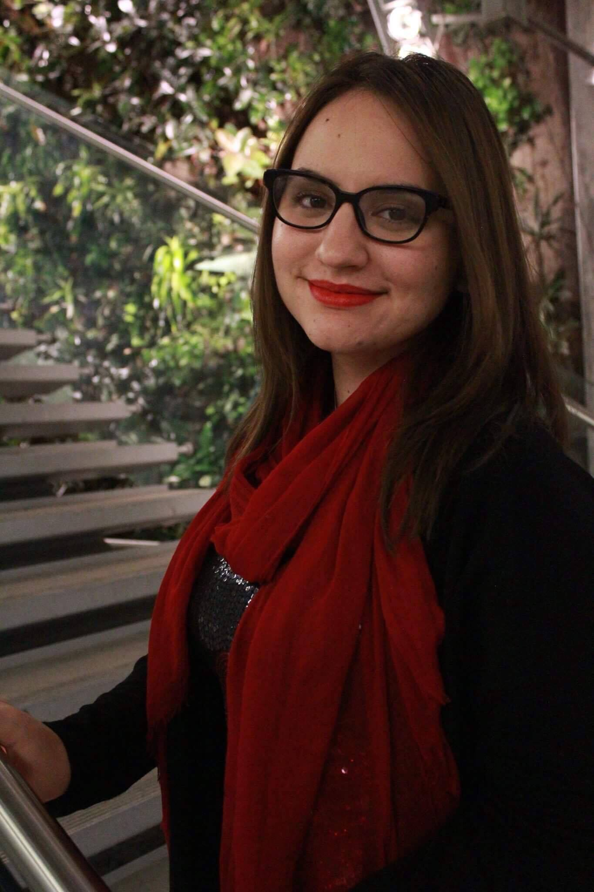
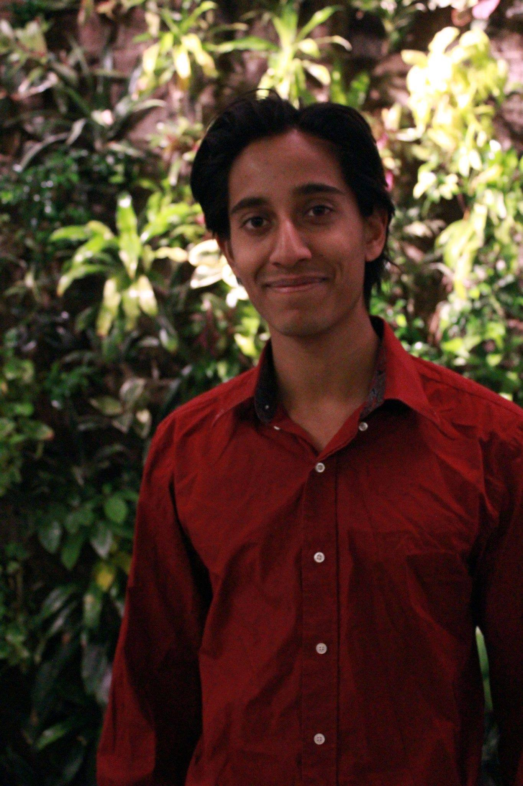
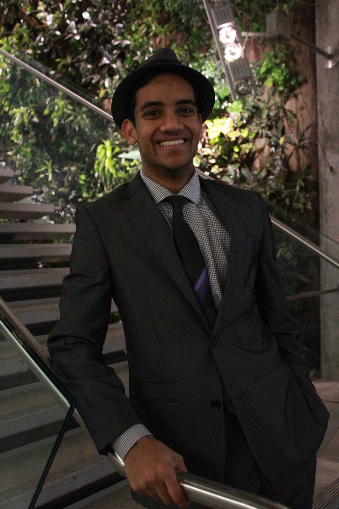

Meet the Secretariat
Arianne
Arianne is a 4th year International Relations and Developmental Studies student with a passion for Latin American politics and studying intergovernmental organizations. Originally she is from Montreal, Quebec but her family is from Venezuela. Her passions include baseball and travelling and she has now been on two short term study abroad trips and also a semester on exchange in Santiago de Chile. She was part of WinMUN’s first secretariat when the organization started in August 2014 and has been in love with all things Model UN ever since. Though this is the 3rd high school conference she has been a part of organizing, this will be the first time she is in the country to attend the day of and so she is very excited to share those two days with her staff and the incoming delegates.
Jason
Jason is currently the Director General of WinMUN. He is a third-year International Relations student, with concentration in Economics and History. Jason joined WinMUN during his first year attending the University of Windsor. Prior to that, he was an awkward high schooler with little involvement in school clubs and zero social skills. With the weekly simulations and the conferences Jason has been to in the past two years, he has gradually built up his analytical skills and the confidence to speak publicly regarding issues he is passionate about. His favorite aspect regarding MUN is the opportunity to travel. Jason has been to conferences such as RMCMUN, UWMG20, McMUN, and MUN4UN. These conferences gave him the opportunities to travel to many places he otherwise would not have traveled to, most notably Montreal and the UN Headquarters in NYC. Outside of school, Jason is an enthusiastic model builder and Star Wars fan. Most would argue that he is too nerdy for his own good.
Sarah
Sarah Hage-Hassan has joined WinMUN the summer before her first year of university as the Director of Events. She joined because she has always had a deep interest for politics and international conflict in general. A few conferences, simulations and a year later she became the Chief of Staff for WinMUN, and has worked on some very important projects. MUN has taught Sarah that everyone, based on their upbringing, their culture, religion or ethnicity may have different opinions and views than you that are all somehow valid. MUN has taught she how to engage in debates on different topics by taking perspectives that I would not necessarily have in real life. MUN has helped Sarah form solid opinions about many political topics and has helped her grow into a position of leadership. Sarah is a Political Science major, with two minors: Philosophy and French. Her interests include debating, running and traveling.
Jess

Jessica Paglia is in third year of her undergraduate degree; she will be graduating in April of 2018 with a Bachelors of Arts (Honours) in Political Science, Law and Politics Specialization. After earning her undergraduate degree, Jessica will be applying to University of Windsor’s Environmental Engineering Program and subsequently earning a Master’s Degree in Urban Systems or Clean Energy Engineering; if not, she will be taking her LSATs and attending Law School. This is Jessica’s first year being involved with MUN; after volunteering for the WinMUN 2016 High School Conference last April, Jessica was inspired by the professionalism and diplomacy of the WinMUN team and decided to apply for a Secretariat position. Jessica now holds the Under Secretary General of Travel Logistics position for the UWindsor Model UN 2017 Secretariat Team. She was recently awarded best delegate at UWMG20. Jessica is also the Communications Chair of Windsor Animal Allies, volunteers for several other organizations, and is an advocate for animal rights and the environment.
Melanie
Melanie Renaud is a second-year Digital Journalism and Communications, Media & Film double major student at the University of Windsor. She is the under secretariat public relations positon for the executive team at Windsor Model United Nations and she held the assistant editor position for the press committee at the WinMUN high school conference in April 2016. Renaud has taken part in Model United Nations conferences such as CANIMUN held in Ottawa – under the international press committee and she has participated as a delegate at Waterloo MUN 2016. Melanie became involved with WinMUN to learn more about politics and debate from a journalist perspective. She is an accomplished writer for the30.ca and Her Campus online publications. Renaud aspires to later enter the field of journalism and pursue a master degree in marketing/public relations after her undergraduate studies.
Sebastian
Sebastian Lacey is currently our Director of Finance and had gotten involved with WinMUN since its conception in 2012 as a transfer student. More than anything, Sebastian attributes Mun to being a great place to meet new friends, improve speaking skills and learn about contemporary international issues. His greatest experience was representing the United States newly elected Trump administration at the University of Waterloo Conference on food and water security. Sebastian is currently in his final year of studying International Relations & Development Studies with specializations in Economics and French. Upon graduation, he will be pursuing graduate studies with the goal of working for Global Affairs Canada either abroad or in Ottawa. Sebastian is also an avid pianist and fan of the New York Jets.
Norma
Norma Roumie is a fourth year International Relations and Development Studies student at the University of Windsor. She has a passion for global affairs and development issues and has practical experience in the field having interned with the United Nations Development Programme in Lebanon. She has been involved with WinMUN since her second year and has occupied the following positions; Director of Events, President, and is currently the Director of Sponsorship. As part of her studies, she has enrolled in courses that focused on Latin America, and this is her inspiration for the Organization of American States (General Assembly Committee). She looks forward to delegates engaging in pressing discussion and coming up with solutions for the ongoing migration crisis occurring in Central America. As an avid MUNer herself she is aware of the excitement and rugosity of representing countries on pressing topics and welcomes all delegates to reach out to her for extra assistance before and during the conference.
Tejas
Tejas Pandya is a second year student studying political science at the University of Windsor. Tejas’ particular interests in political science include: security studies, political philosophy, and minority rights. Currently, Tejas is working as a research assistant on a project that analyzes aboriginal rights in advanced democracies. Tejas began participating in Model United Nations last year and has since been to numerous Model United Nations conferences. After he finishes his undergraduate degree, Tejas plans to either go to law school or pursue graduate studies to eventually become a professor of political science. Tejas' hobbies include running and tennis.
Nathaniel
Nathaniel is a third year student, and currently a second year BCOMM – (Honors) Business administration student. He has been part of WinMUN since the first year. He first started out as a delegate and volunteered as a page for the very first WinMUN high school conference. He is currently the Under Secretary General of Training and has held this position for 2 years. He has attended multiple conferences as a delegate, where he has gone to Chicago and Boston, and has won Honorable mention at YorkMUN 2015. He will be one of the chairs for this year’s joint crisis.